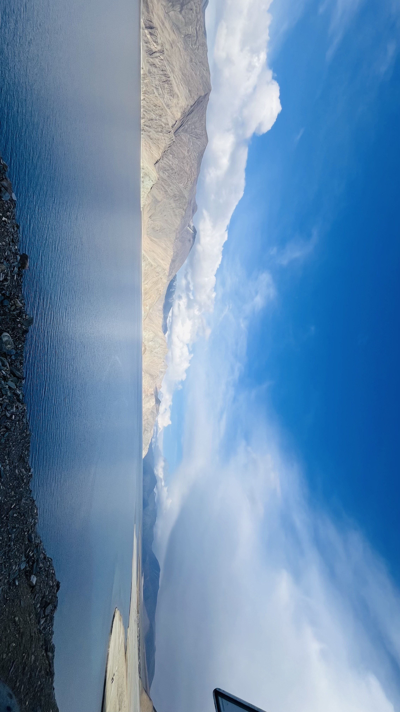

Distance
Ride Time
Highest Point
Overnight Stay

7 Days • Signature Expedition
Seven unforgettable days through Ladakh's highest passes, hidden valleys, remote campsites and pristine lakes. Built for riders seeking a true Himalayan expedition.